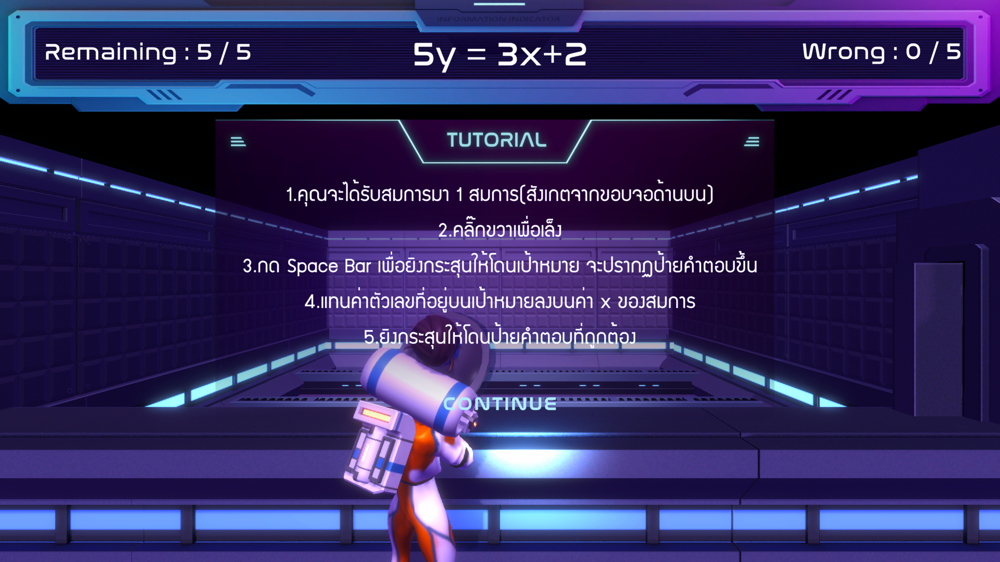
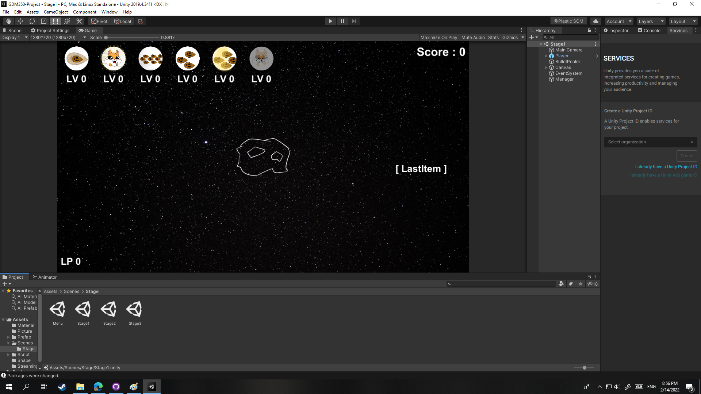
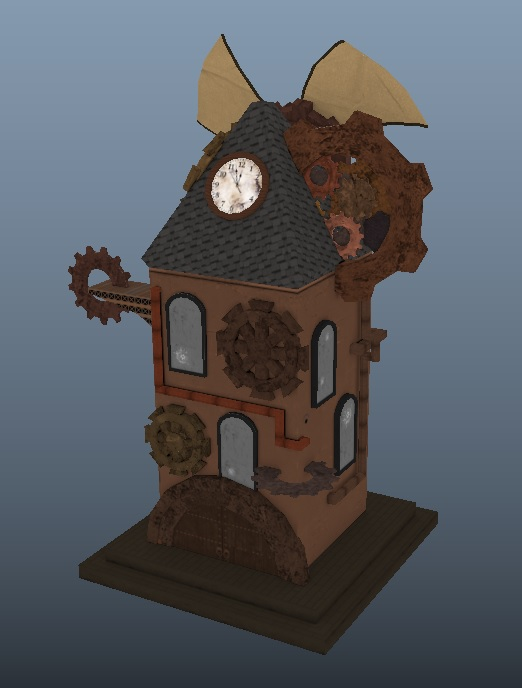

GraphBeater เป็นเกม 3D คณิตศาสตร์เพื่อการศึกษาเกี่ยวกับเรื่องสมการและกราฟ ซึ่งทำขึ้นเพื่อส่งเเข่นขัน NSC2022 และสามารถชนะผ่านเข้าถึงรอบรองชนะเลิสได้
ผลงาน Game Trailer ที่จัดขึ้นโดยใช้ Unity3D+HDRP เพื่อ ศึกษาการจัดฉาก แสง มุมกล้อง และสภาพแวดล้อม เพื่อให้ออกดูดีที่สุด

Gizen เป็นผลงาน Hack&Slash Mobile Game ที่ทำขึ้นเพื่อทดลองการนำเกมลงใน Google Play Store

Squirrel Space เป็นเกม 2D Bullet Hell เป็นผลงานโปรเจคที่จัดทำขึ้นในชั้นปีที่ 2
Squirrel Space เป็นเกม 2D Bullet Hell เป็นผลงานโปรเจคที่จัดทำขึ้นในชั้นปีที่ 2

ผลงานโมเดลบ้าน fantasy ซึ่งเป็นงานที่ต้องทำการออกแบบบ้านและทำการปั้นกับลง texture โมเดลเอง โดยจะมี theme แนว

ผลงานการออกแบบตัวละครพร้อมทั้งทำการ modeling และ rigging เพื่อนำไปทำการทำอนิเมชั่น
ผลงาน Animation ทำโดยใช้โปรแกรม Animate CC ซึ่งดัดแปลงมาจากนิทานเรื่อง กระต่ายหมายจันทร์

ผลงาน Sticker Line ซึ่งทำโดยโปรแกรม Animate CC โดยมี Concept เป็นกระต่ายบ้า